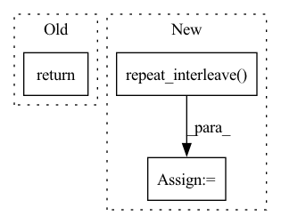

Pattern ID :40823
Before Change
output.append(input_target)
output = torch.cat(output, dim=1)
return output
def forward(self, x: Dict[str, torch.Tensor]) -> Dict[str, torch.Tensor]:
After Change
// run in eval, i.e. simulation mode
target_pos = self.target_position
// repeat for n_samples
input_vector = input_vector.repeat_interleave( n_samples, 0)
hidden = hidden.repeat_interleave(n_samples, 1)
cell = cell.repeat_interleave(n_samples, 1)
target_scale = target_scale.repeat_interleave(n_samples, 0)
In pattern: SUPERPATTERN
Frequency: 5
Non-data size: 3
Instances Fragment ID: 115200444
Project Name: jdb78/pytorch-forecasting
Commit Name: 64cdac098431334c841b46a0c79fdcee81a59c4b
Time: 2020-11-05
Author: beitner.jan@bcg.com
File Name: pytorch_forecasting/models/deepar/__init__.py
M Class Name: DeepAR
N Class Name: DeepAR
M Method Name: decode(7)
N Method Name: decode(5)
M Parent Class: AutoRegressiveBaseModelWithCovariates
N Parent Class: AutoRegressiveBaseModelWithCovariates
M File Name: pytorch_forecasting/models/deepar/__init__.py
N File Name: pytorch_forecasting/models/deepar/__init__.py
M Start Line: 172
M End Line: 207
N Start Line: 231
N End Line: 290
Before Change
for idx, N in enumerate(nevals):
res_in_all_cubes.append(res[idx, 0:N, :])
return anp.concatenate(res_in_all_cubes, axis=0, like=res)
After Change
// For each hypercube i, repeat its position nevals[i] times
if self.backend == "torch":
// Autoray doesn"t yet support repeat.
position_indices = anp.repeat_interleave( nevals_arange, nevals)
else:
position_indices = anp.repeat(nevals_arange, nevals)
positions = positions[position_indices, :]
Fragment ID: 115200443
Project Name: esa/torchquad
Commit Name: 3d6c190f15cccfe658bb7d78ffdd0977d65b38c2
Time: 2022-03-14
Author: ga84muv@mytum.de
File Name: torchquad/integration/vegas_stratification.py
M Class Name: VEGASStratification
N Class Name: VEGASStratification
M Method Name: get_Y(2)
N Method Name: get_Y(2)
M Parent Class:
N Parent Class:
M File Name: torchquad/integration/vegas_stratification.py
N File Name: torchquad/integration/vegas_stratification.py
M Start Line: 159
M End Line: 187
N Start Line: 161
N End Line: 179
Before Change
return batch, y_means, y_stds
def _inv_normalization(self, y_hat, y_means, y_stds):
return y_stds[:, None]*y_hat + y_means[:, None]
def _create_windows(self, batch, step):
temporal = batch["temporal"]After Change
y_scale = self.scaler.x_scale[:, temporal_data_cols.get_indexer(["y"]), :]
y_shift = self.scaler.x_shift[:, temporal_data_cols.get_indexer(["y"]), :]
y_scale = torch.repeat_interleave( y_scale, repeats=y_hat.shape[1], dim=1)
y_shift = torch.repeat_interleave(y_shift, repeats=y_hat.shape[1], dim=1)
y_hat = self.scaler.inverse_transform(z=y_hat, x_scale=y_scale, x_shift=y_shift)
Fragment ID: 115200459
Project Name: nixtla/neuralforecast
Commit Name: 73dab945c58726e3f150b851bb94e3a003a590a0
Time: 2022-11-02
Author: mergenthaler.m@gmail.com
File Name: neuralforecast/common/_base_recurrent.py
M Class Name: BaseRecurrent
N Class Name: BaseRecurrent
M Method Name: _inv_normalization(3)
N Method Name: _inv_normalization(4)
M Parent Class: pl.LightningModule
N Parent Class: pl.LightningModule
M File Name: neuralforecast/common/_base_recurrent.py
N File Name: neuralforecast/common/_base_recurrent.py
M Start Line: 126
M End Line: 127
N Start Line: 132
N End Line: 141
Before Change
if not hasattr(self, "interp_func"):
self.get_interpolator()
return interpolate_reg_grid(self.interp_func, pos)
After Change
print("___", time()-t0)
t0 = time()
bas_coords = self.atom_coords.repeat_interleave(
self.nshells, dim=0)
print("___bas ", time()-t0)
t0 = time()
xyz = (pos.view(-1, self.nelec, 1, self.ndim) -
bas_coords[None, ...]).detach().numpy()
print("___ xyz", time()-t0)
Fragment ID: 115200452
Project Name: nlesc-jcer/qmctorch
Commit Name: 7cfb514524df67f6b1b553207580f79b5dbf21a9
Time: 2020-05-13
Author: nicolas.gm.renaud@gmail.com
File Name: qmctorch/wavefunction/atomic_orbitals.py
M Class Name: AtomicOrbitals
N Class Name: AtomicOrbitals
M Method Name: interpolate(2)
N Method Name: interpolate(2)
M Parent Class: nn.Module
N Parent Class: nn.Module
M File Name: qmctorch/wavefunction/atomic_orbitals.py
N File Name: qmctorch/wavefunction/atomic_orbitals.py
M Start Line: 298
M End Line: 298
N Start Line: 323
N End Line: 342
Before Change
if self.loss.outputsize_multiplier>1:
y_stds = y_stds.unsqueeze(-1)
y_means = y_means.unsqueeze(-1)
return y_stds * y_hat + y_means
def _parse_windows(self, batch, windows):
// Filter insample lags from outsample horizonAfter Change
y_scale = self.scaler.x_scale[:,:,temporal_data_cols.get_indexer(["y"])]
y_shift = self.scaler.x_shift[:,:,temporal_data_cols.get_indexer(["y"])]
y_scale = torch.repeat_interleave( y_scale, repeats=y_hat.shape[-1], dim=-1)
y_shift = torch.repeat_interleave(y_shift, repeats=y_hat.shape[-1], dim=-1)
y_hat = self.scaler.inverse_transform(z=y_hat, x_scale=y_scale, x_shift=y_shift)
Fragment ID: 115200439
Project Name: nixtla/neuralforecast
Commit Name: 836893e630896313df21e9db9dc7a9206b198969
Time: 2022-10-06
Author: mergenthaler.m@gmail.com
File Name: neuralforecast/common/_base_windows.py
M Class Name: BaseWindows
N Class Name: BaseWindows
M Method Name: _inv_normalization(3)
N Method Name: _inv_normalization(4)
M Parent Class: pl.LightningModule
N Parent Class: pl.LightningModule
M File Name: neuralforecast/common/_base_windows.py
N File Name: neuralforecast/common/_base_windows.py
M Start Line: 200
M End Line: 206
N Start Line: 200
N End Line: 218